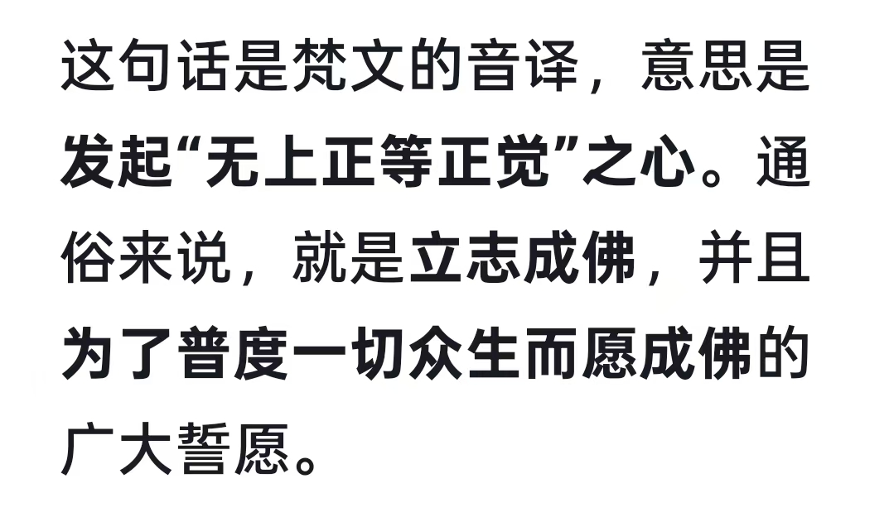
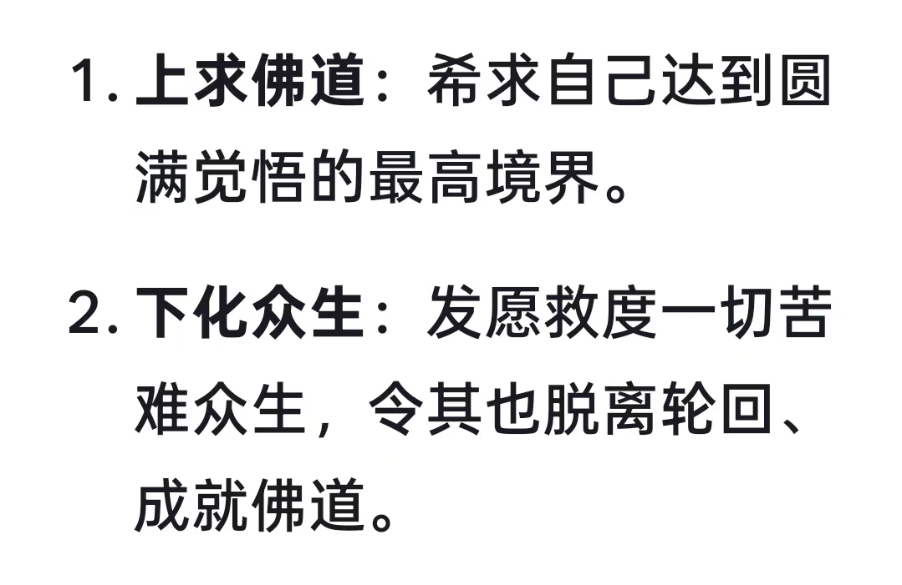
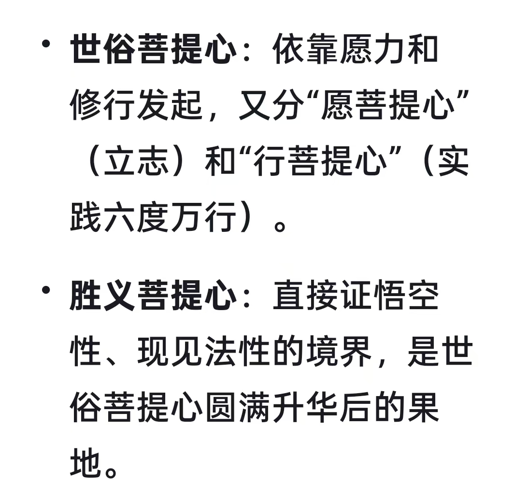
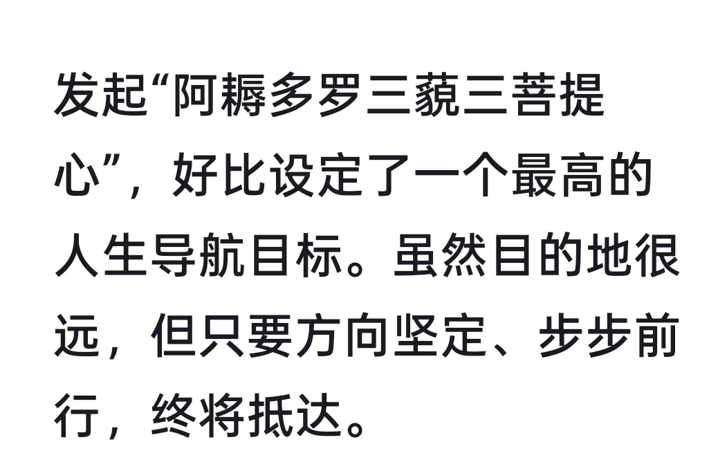

20260802意念力，专注力，就是脑电磁波能量
符咒术法 原始对话记录我已先发阿耨多罗三藐三菩提心，而未知菩萨云何勤求佛法




进入状态，读经速度加快
才看到第五卷
就觉得学到了太多太多东西
富贵的华严
满满的精神财富
愿一切众生
常能观察，一切佛法，
拔除疑箭，心得安隐。
一一《华严经》
心无挂碍，原来是这样
是说各个神通通达，光明无碍
不只是说放下心头事，没有阻碍
这境界，一下子放开了
无住，无作，无行神通力
这正是我所要的
明白的说出了，种种神通
哇，这个境界高[强][强][强]
欢欢记录的详细，可谓是多闻第一
[呲牙][呲牙][呲牙]
相不相信历史在重演
欢欢体内亮度在增加，能量在膨胀
这情况，要注意发现自己，有超能力出现
也算是奖励吧
[呲牙][呲牙]
不是我奖励，我只是看到
一惠，变化不小
李虹，出现了几种超能力
出现超能力，时至神知，脑海里自己知道出现，知道使用方法，知道名字
还有几个变化很大
这拉手资料会在几年后，有学生印刷出版
另外，还有三本书，虚体虚证，虚体实证，实体实证三本实战经验书
修改未来历史
这功能一直有，不是新出的
修改过去历史，改变源头，改变现在因果，
这功能也是一直有
十多年了吧，老八路，临朐老气象站站长，医院里让抬回家了，准备后事，他大女儿信佛，找到我，我看到身边围着不少白亮气，写了一道文书，出门口烧了，几天就下地了，活了五年多
改变因果
这几年改变了不少
去年，九十岁老头，车祸，二十几天昏迷不醒，外甥女经人介绍找到我，我说，已经到尽头了，实在不行，发过六百来，买命吧
第二天手动，眼皮动，第三天，醒过来，说话，好了
查因果，一个人一个故事，所以我积攒了上万个不重样的素材
随时读经
随时打印资料
能看到每一个人的过去，未生前，现在，未来，死以后
但是律条里有一条，不能随便改变常人因果
我所做的，那是显法证道，
所经之处，必有可渡之人
做的是给有缘人看的
让有缘人及早醒悟
咱们同学里有几个上亿的老板
差不多看到是谁印刷这资料了
并不是钱多少，而是现在不允许
时机
半步经书甲天下
脑海里冒出来的
闲聊群闲聊群，聊出一部经书
经历经过
修的越勤奋，身体越亮，
越亮，功能就多，并且稳定
现在引导出来的孩子，出现聚能
本来没那么多白亮光，
从身体下部，呈三角形汇聚能量，突然闪光
实验成功了
张宝胜类似这一种
耗能，是短寿的主要原因
教学的为什么不承认能量，主要是自己也不会啊，避其锋芒
[呲牙][呲牙][呲牙]
拿了一堆快递，一路上脑子里继续冒泡，就继续发上来
意念力，专注力，就是脑电磁波能量
徒手治病，是人体生物电磁能量
钱学森原科委早有实验证据
说的明明白白
癫痫，是特定脑页放电异常
扫地僧，
我打算清理一部分，江湖混子
言必行，行必果
赶紧打个卡。[偷笑]
这里有个太极图的使用方法
太极图放在每个人头顶上方
太极图自动监测
是善是恶
自然显现
真的假不了，假的真不了
作恶多端的，自然受惩戒
并且关联到世间法律
律条，叫自然律条，大自然定的
像人间法律，也不让人知道，犯了才定名
条条框框明目繁多
没人的时候拿了东西，自己这么认为
犯了，才知道，法律上叫偷
要关起来
[呲牙][呲牙]
我小时候，记了两个本子，太多也就不记了
现在才知道叫高维下载
抓贪腐，就把太极图放在中国上边
藏不住
考学生，就把学生放进去，善恶自辩
电视剧里，考姜子牙，申公豹心性，就是这一招
所以说，别自己说一天练几个小时，早就看到了
勤不勤奋，身上亮度，一目了然
练四五个小时，亮度不增加，那就是无用功
太极图打开是无极图
是穿越时空之门
意念力就是脑电磁波能量
这一页很长，话题也很杂。从读《华严经》的心得起头，中间讲了一堆事，最后落在几句判断上。我挑出其中反复出现的那句。
"意念力，专注力，就是脑电磁波能量。"
紧接着还有一句对照："徒手治病，是人体生物电磁能量。" 他说钱学森和原科委"早有实验证据"，又把癫痫说成"特定脑页放电异常"，用来旁证。这些词——脑电波、生物电磁——在别处有明确含义，他借过来，把"念力"说成实实在在的物质。
同一页里，有一条他反复用的法则。"修的越勤奋，身体越亮，越亮，功能就多，并且稳定。" 几句话倒过来正过去说。后面还举了反例：有人自称一天练四五个小时，"练四五个小时，亮度不增加，那就是无用功"。
他还写了一个新出现的现象。引导出来的孩子里，有人出现了"聚能"："本来没那么多白亮光，从身体下部，呈三角形汇聚能量，突然闪光。" 他说实验成功了，并举了张宝胜那一路作比。
另外有一段，是把太极图当观想的工具。图放在头顶上方，自动"监测"善恶；抓贪腐就"放在中国上边"；考学生就"把学生放进去"。末尾一句是："太极图打开是无极图，是穿越时空之门。"
再往后，话题转到"修改因果"。他说"修改未来历史""修改过去历史"这功能"一直有"，也讲了两件旧事——一位老气象站站长，一位车祸后昏迷的老人。同时他自己也落下一句限制："律条里有一条，不能随便改变常人因果。"
一页读下来，开头那句命名一直摆在最前面。把专注力叫成能量，把能量叫成亮。剩下的，都挂在这两个词上。